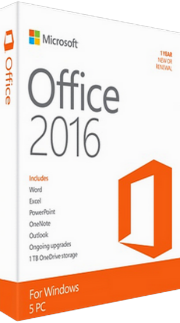

Список товаров:
|  |
Текущая версия офисного пакета компании Microsoft, следующая за Microsoft Office 2013. Выпуск финальной версии состоялся 23 сентября 2015 года, при этом версия для macOS стала доступна потребителям в июле 2015 года. |
ЦП [CPU]: частота процессора не менее 1 ГГц с поддержкой инструкций SSE2 Видеоадаптер [GPU]: 3D адаптер Винчестер [HDD]: 3GB Оперативная память[RAM]: 2GB Наличие NET Framework 3.5, 4.0 или 4.5 |
|---|---|---|
|
KMS-активатор автоматического типа для операционных систем линейки Microsoft Windows, их серверных версий, а также программного обеспечения Microsoft Office. |
операционная система Windows Vista, Windows 7, Windows 8, Windows 10 Максимальная; установленный пакет .NET Framework 4; 5 МБ свободного места на жестком диске. |

|
ocmashelp@gmail.com |
|---|